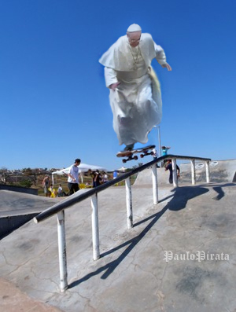
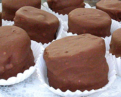

Agentes da nossa querida ABIN brasileira revelaram, em depoimento exclusivo a uma das nossas mais confiáveis agências de notícias, que o verdadeiro responsável pelo recente falecimento do papa Francisco no mês de abril de 2025 foi finalmente capturado e exonerado do cargo público que vinha exercendo às escondidas até então.
Trata-se do então Ministro da Previdência Carlos Lupi, indivíduo que deu bastante trabalho apenas para ser localizado durante breve pausa em horário de almoço. Além de ter desabilitado os dados móveis do seu celular de botão, descobriu-se que o ministro em questão obstaculizou sua identificação porque ele portava um discman, uma segunda identidade, e afirmava até mesmo ser negro (e não cinzento, como realmente parece).
O papa segue enterrado... ou melhor, sepultado em seu sarcófago no Vaticano.

Após voar pelos ares com um golpe de Vegeta, Nappa o Máximo tenta pescar pacú e acaba perdido por 95 dias no oceano.
Nappa relata que sua canoa virou, foi pro fundo do mar, foi por causa de uma tempestade causada pelas esferas do dragão. Para sobreviver, se alimentou de dinossauros, saibaimans e da tartaruga do Mestre Kame.
Uma tropa do Freeza iniciou uma busca, mas as patrulhas marítimas não conseguiram localizá-lo até quarta-feira, quando uma patrulha liderada pelo Antedeguemon o descobriu a cerca de 1.094 km da costa do país.
Até o momento desta notícia, Nappa continuava um fracassado.
No final da noite de ontem, 15 pessoas foram presas traficando pãezinhos de mel na praia de Ipanema, no Rio de Janeiro.
Policiais que fizeram a apreensão disseram: "Os traficantes estavam com uma carga com vários pãezinhos de mel embrulhados e enfeitados, aproximadamente, 20kg de pãezinhos de mel."
"Os pãezinhos de mel iriam ser vendidos em um baile funk da região", de acordo com o Sargento Carlos.
Policiais da região já estão pensando em medidas de resolver o tráfico de pãezinhos de mel, que é um problema que vem afetando vários adolescentes, nos últimos anos.
Uma outra informação dos policiais, é que dos 20kg de pãezinhos de mel, 5kg eram cobertos e recheados com chocolate.
